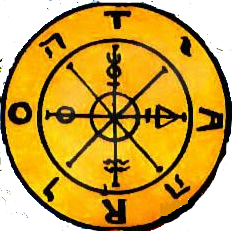

Maiores
Teoria do tarô
Aspectos simbólicos e arquetípicos presentes no tarô


Ouros

Espadas

Copas

Paus
Teoria

Plano Mental
Gládios, lanças
AR
Yang | Quente e úmido - Tudo o que é racionalizado
Espadas representa o ar e está relacionado com a parte mental a qual se conecta com a razão e o conhecimento, a maneira como descrevemos o mundo. Representa tudo o que pode ser racionalizado, pensado e direcionado para a ação: "Como eu penso ser, O que eu penso a respeito de...". O verbo trabalhado aqui é o SER.
- Pensamento, inteligência, trocas e intercâmbio. Fusão, cooperação dos opostos, ação penetrante do Verbo.
- Maturidade e equilíbrio.
- Racional, teórico, filosófico, intelectual.
- Esforço, dificuldades, energia para a renovação.
- Arma que desenha uma cruz e recorda a união fecunda dos princípios masculino e feminino. A espada simboliza também uma ação penetrante como a do Verbo ou do Filho.
- No plano a identidade individual significa maturidade e equilíbrio.
- Socialmente representaria os militares e os guerreiros; policiais e fiscais; toda atividade que toma das armas para manter uma ordem ou modificá-la. Relaciona-se ao poder apoiado pela força.
- Corresponde ao cavaleiro, entre as figuras do baralho.
- São os silfos e os gigantes, entre os espíritos elementares.

Plano Emocional
Taças, ânforas, corações
ÁGUA
Yin | Frio e úmido - Tudo o que pode ser sonhado
Copas representa a água e está relacionado com a parte emocional a qual se conecta com o abstrato que tem uma relação direta com os sentimentos, as nossas sensações emocionais. Rege tudo aquilo que pode ser sonhado, esperançado aspirado pela alma. O verbo trabalhado aqui é ESTAR.
- Sentimentos e emoções. Receptividade feminina, ânfora divinatória. Sensibilidade, ideais, criações artísticas. Amores, afetos, prazeres. Paixões e sentimentos profundos. Intuitivo, místico, romântico.
- A Mãe. Artistas, religiosos, intelectuais e poderes adquiridos por meio da cultura.
- No plano da identidade individual significa a sensibilidade, o amor, os ideais, a criação artística.
- Corresponde à dama, entre as figuras do baralho.
- São as ondinas e as sereias, entre os espíritos elementares.

Plano Espiritual
Bastões, varas, trevos
FOGO
Yang | Quente e seco - Tudo o que pode ser compreendido
Paus representa fogo e está relacionado com a parte espiritual a qual se conecta com aspectos ligados a filosofia, transformação, atitude e religiosidade. Refere-se a tudo que pode ser compreendido, aceito e evoluído pela transcendência. O verbo aqui é o FICAR.
- Vontade, inspiração, criação, força, ânimo. Iniciativa, progresso, empreendimento. Desenvolvimento, animação, invenção. Energia. Vivências, acontecimentos.
- Vara mágica, bastão do comando, cetro da dominação viril.
- Pai, poder gerador do masculino. Idealista, moralista.
- No plano da identidade individual significa força.
- Socialmente representaria os políticos, produtores e agricultores; operários, empregados e camponeses. Relaciona-se ao governo civil.
- Corresponde ao rei, entre as figuras do baralho.
- São as salamandras, entre os espíritos elementares.